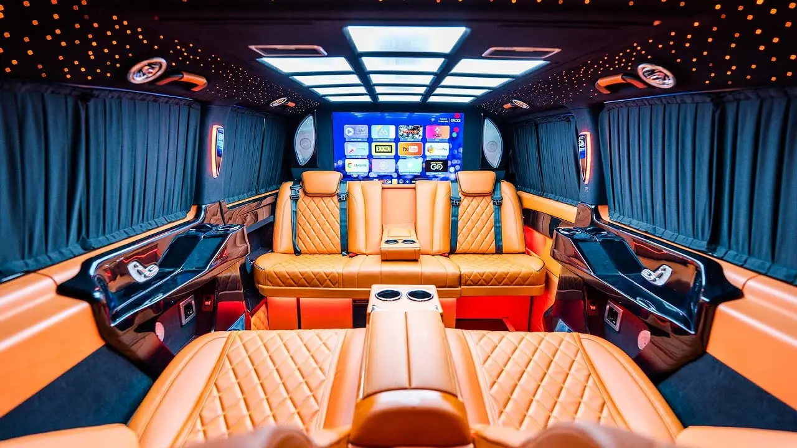
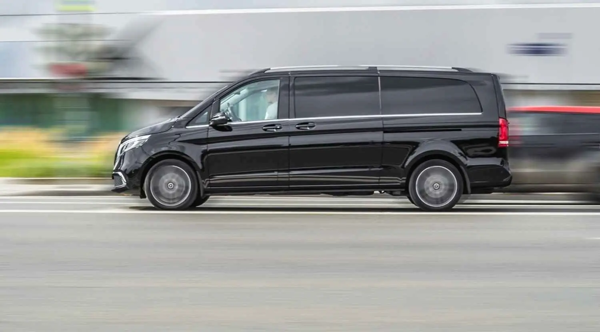
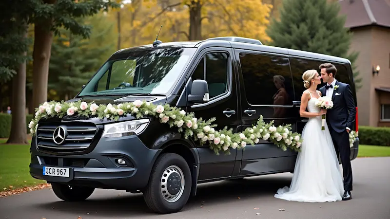

Rezervasyon Yap
Size özel hazırladığımız VIP transfer çözümleri.
Uçuş saatiniz ne olursa olsun, sizi kapınızdan alıp havalimanına tam zamanında ulaştırıyoruz. Karşılama hizmetimizle misafirlerinizi isimiyle karşılıyor, bagajlarına yardımcı oluyor ve protokol konforunda transfer sağlıyoruz.

Özel günleriniz, iş seyahatleriniz veya diplomatik konuklarınız için üst düzey standartlarda ulaşım. Prestijin ön planda olduğu bu hizmetimizde, konfor ve güvenlikten ödün vermiyoruz.

Ankara içinde veya başka şehirlere yapacağınız yolculuklarda, kendi aracınızın konforunu aratmayan, yorulmanızı engelleyen profesyonel sürüş deneyimi. Mola yerlerine siz karar verin.

Kongre, seminer, düğün veya özel davetlerinizde kalabalık misafir gruplarınızı koordine ediyor, ulaşım operasyonunu baştan sona profesyonelce yönetiyoruz.
VIP transfer hizmetimiz hakkında aklınıza takılan tüm soruların cevapları.
Fiyatlarımız; gidilecek mesafe (km), seçilen araç tipi (Mercedes Vito VIP vb.) ve talep edilen ekstra hizmetlere göre sabit olarak belirlenir. Taksimetre sürprizi yaşamazsınız, rezervasyon anında net fiyatı öğrenirsiniz.
Operasyon ekibimiz uçuş kodunuz üzerinden uçağınızı anlık olarak takip eder. Uçağınız rötar yapsa bile şoförümüz iniş saatinizde sizi bekliyor olacaktır. Rötar kaynaklı ekstra bekleme ücreti talep edilmez.
Evet, tüm araçlarımızda kredi kartı geçerlidir. İster rezervasyon sırasında havale/EFT ile, isterseniz de transfer sonunda araç içinde nakit veya kredi kartı ile ödeme yapabilirsiniz.
Kesinlikle. Ailenizin güvenliği bizim için önceliktir. Rezervasyon sırasında belirtmeniz durumunda, aracınıza ücretsiz olarak hijyenik bebek veya çocuk koltuğu yerleştiriyoruz.
Evet, Ankara çıkışlı veya Ankara varışlı olmak üzere Türkiye'nin 81 iline VIP transfer hizmetimiz vardır. Özellikle Kapadokya, Antalya, Bodrum ve İstanbul rotalarında konforlu ve güvenli seyahat imkanı sunuyoruz.
Karmaşık formlarla uğraşmayın. Bize ulaşın, gerisini profesyonel ekibimize bırakın.
WhatsApp üzerinden tarihinizi, saatinizi ve güzergahınızı bize iletin. Anında fiyat teklifimizi sunalım.
Size uygun aracı seçin ve rezervasyonunuzu onaylayın. Operasyon ekibimiz aracınızı sizin için hazırlasın.
Aracımız tam saatinde kapınızda olsun. Ödemenizi araçta yapın ve VIP konforun tadını çıkarın.